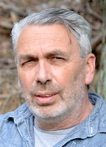
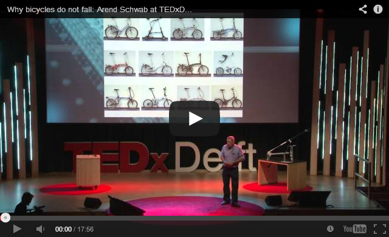
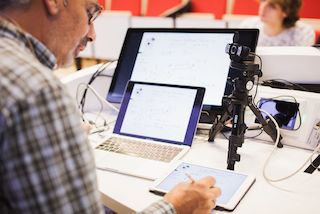

|
Arend L. Schwab |
 |
|
I have a bicycle dynamics lab. I'm in theoretical and applied mechanics and I teach mechanics and multibody dynamics. I am interested in Dynamics of Mechanical Systems, the so-called Multibody Dynamics. In particular the treatment of contact phenomena like in collisions and rolling (non-holonomic constraints) have my special interest. I also know more or less about dynamics of flexible multibody system, finite element method, legged locomotion, speed skating and bicycle dynamics and control. My degrees are from Engineering at Dordrecht (BSc 79) and Engineering at Delft (MSc 83, PhD 02).
Me
CV, Resume
Personal Information: addresses, relatives, where I've lived, USA contacts, etc... & Season's Greetings!
Schedule, travel dates, detailed itineraries
Want to meet me? Check my Schedule, pick a time and give me a call/email.

Research
Bicycle dynamics
Multibody Dynamics
Software, SPACAR
Mechanics Colloquium
Publications
Papers,
Lecture Notes, etc.
Courses
etc.
ME41055
(spring 2018) Multibody Dynamics B
ME41050
(fall 2017) Multibody Dynamics A
ME41060 (fall 2017) MATLAB in Engineering Mechanics
wb1216-06 (spring 2013) Dynamica 2, "Mechanical Vibrations"
TAM 674 (spring 2003)
Applied Multibody Dynamics
MSc project
proposals
-Postdoc: Fall Prevention in Elite and Consumer Cycling, 3y, starting Sep 2020
Other

- TU
Delft Portrait
of Science
2019: Bicycle research
has overcome sceptism
- TU Delft Bicycle Lab
Publicity in the Dutch press
-
Livestream lectures @ TU Delft my one-man-band
- Bicycle and Motorcycle Dynamics conference
collection http://bmdconf.org/
- International Cycle Safety Conference collection http://cyclingsafety.net/
- International 3-day Symposium Bicycle and
Motorcycle Dynamics 2016, BMD2016, Sep 21-23 ,
2016, University of Milwaukee, WI..
- 5th International 2 day symposium on Cycle
Safety, 3-4 Nov 2016, Bologna, ICSC2016.
- Giant-Alpecin team & TU Delft descending
analysis at La Plagne, sept 2015.
-
Casa Luna, Radio 1, 22 November 2013, Arend
Schwab, Fietsonderzoeker.
- My TED talk at
TEDxDelft2012 on "Why bicycles do not fall".
-
International 3-day Symposium Bicycle
and Motorcycle Dynamics 2010, BMD2010, Oct 20-22, 2010,
Delft, University of Technology.
- International 3-day Symposium Advances in Contact
Mechanics: a tribute to Prof. J.J.Kalker, Oct 22-24,
2008, Delft, University of Technology.
- Joost J.
Kalker (1933-2006): a life in rolling contact. Paper
and presentation.
See also TWI website.
- Kalker, J. J. (1967). On the rolling contact of two
elastic bodies in the presence of dry friction. PhD
thesis, Delft University of Technology, reprint pdf(4,91MB)
- CADOM,
TUDelft software for Synthesis and Analysis of Mechanism.
- Repository on Bicycle
Handling Qualities (private).
- Matlab interface to the Postscript Language: pshacker